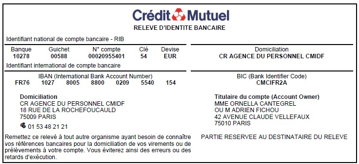

Camping Sites & Paysages Le Neptune ★★★★
Camping familial avec mobil-homes et chalets.
Camping
Dans le jardin du Manoir de la Noë Verte
Salle de réception du Manoir
Retour au jardin pour un brunch convivial 🌿
Camping familial avec mobil-homes et chalets.
Plusieurs gîtes de charme sur une même propriété.
Hébergement de groupe modulable, proche mer & GR34.
Magnifique manoir breton, option plus haut de gamme.
Astuce : partagez covoiturage ou taxis dans le groupe WhatsApp des invités 🚗
Merci de remplir le formulaire ci-dessous pour nous confirmer votre présence 💌
Votre présence est déjà le plus beau des cadeaux 💚 Pour ceux qui souhaitent toutefois nous soutenir, une participation libre à notre cagnotte est possible.
Vous pouvez faire un virement directement sur notre compte :
Scannez ou téléchargez notre RIB ci-dessous :

Merci du fond du cœur pour votre générosité 💫
Nous avons hâte de partager cette belle aventure avec vous !
Quelques informations utiles pour profiter sereinement de ce week-end 🌿
Adresse : Manoir de la Noë Verte, 22290 Lanloup
Grand parking sur place, à proximité immédiate du manoir.
Un binôme de chauffeurs assurera le retour des voitures et des invités ayant bu — gratuit, système de roulement 🍸🚗
Pas d’animaux sur le site du mariage. Merci de prévoir une garde 🐾.
Soirée adulte uniquement — il n’est pas possible de faire garder les enfants sur place.
Le service de chauffeurs bénévoles vous ramènera, ainsi que votre voiture, en toute sécurité (roulement prévu).
Merci de privilégier cette solution plutôt que de reprendre le volant 🚫.
La plage (ex. Plage du Palus) est à ~10 minutes — baignade possible 🌊. Prévoyez maillots & serviettes.